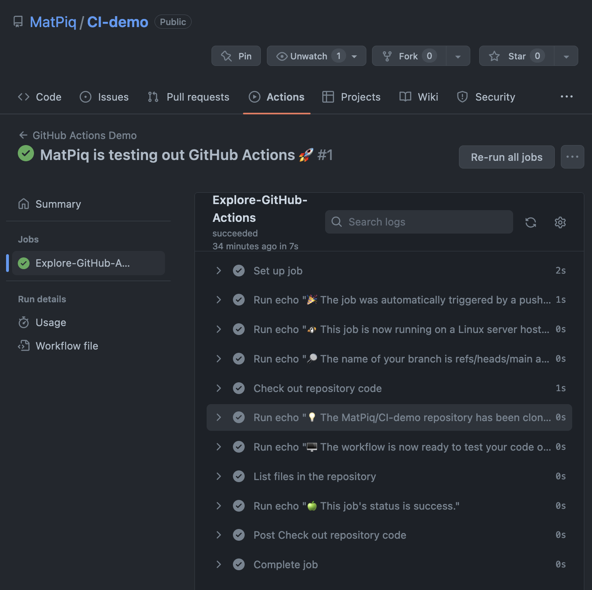

Gh actions
Github actions lets you automate the process of testing (and much more).
Some common use cases
- Testing
- Building and deployment
- Code quality e.g. linting and formatting
- Generating websites/documentation (this webpage)
- Code scanning (security vulnerabilities)
A first look
We will now take a first look at GH Actions using the example from Github's quickstart guide.
Step 1
We need to create a repository on Github. Have have prepared one here.
Step 2
Next, I will clone the repository locally and enter the project
Step 3
We create the .github/workflows directory and add the
github-actions-demo.yml file.
The directory should look something like this:
We can now paste the example workflow into github-actions-demo.yml. For
example using vim:
name: GitHub Actions Demo
run-name: ${{ github.actor }} is testing out GitHub Actions 🚀
on: [push]
jobs:
Explore-GitHub-Actions:
runs-on: ubuntu-latest
steps:
- run: echo "🎉 The job was automatically triggered by a ${{ github.event_name }} event."
- run: echo "🐧 This job is now running on a ${{ runner.os }} server hosted by GitHub!"
- run: echo "🔎 The name of your branch is ${{ github.ref }} and your repository is ${{ github.repository }}."
- name: Check out repository code
uses: actions/checkout@v3
- run: echo "💡 The ${{ github.repository }} repository has been cloned to the runner."
- run: echo "🖥️ The workflow is now ready to test your code on the runner."
- name: List files in the repository
run: |
ls ${{ github.workspace }}
- run: echo "🍏 This job's status is ${{ job.status }}."
YAML syntax
name: Name of workflow shown under "Actions" tabrun-name: Name specific for the runon: When the workflow should be triggered e.g. push, pull request (can be several)runs-on: Which virtual machine to run the tests onsteps: Logically separated "tasks" in your workflow. A step can run commands or an action. Changes to environment variables are not preserved between steps.run:
There are many more options available that can be found here.
Step 4
We will now commit and push the changes to Github and inspect the workflow.
Step 5
We can now go to "Actions" tab in the repository on Github to inspect our workflow.

Examples from the wild
- numpy: Various continuous integration (CI) services are triggered after each PR update to build the code, run unit tests, measure code coverage and check coding style of your branch. The CI tests must pass before your PR can be merged. If CI fails, you can find out why by clicking on the “failed” icon (red cross) and inspecting the build and test log. To avoid overuse and waste of this resource, test your work locally before committing.